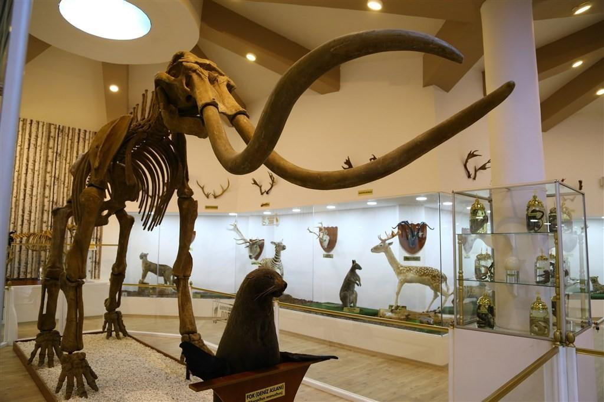

Fosil ve İskelet Koleksiyonu
Gaziantep Zooloji ve Doğa Müzesi’nin en dikkat çekici bölümlerinden biri olan Fosil ve İskelet Koleksiyonu, milyonlarca yıl öncesine ait büyük memeli iskeletleri ve seçkin fosillerle canlıların anatomik yapısını ve tarihsel gelişimini ayrıntılı biçimde ortaya koyar; özel ışıklandırmalı cam vitrinlerde sergilenen bu örnekler hem korunarak detaylı incelenebilir hem de evrimsel süreçlerin somut biçimde gözlemlenmesine imkân tanır, böylece öğrenciler için güçlü bir öğrenme alanı, akademisyenler için değerli bir araştırma kaynağı, aileler ve çocuklar için ise eğlenceli ve öğretici bir keşif ortamı sunar; Türkiye’de bir hayvanat bahçesi bünyesinde kurulan ilk zooloji müzesi olması nedeniyle ulusal düzeyde özgünlük taşıyan bu koleksiyon, Gaziantep’in kültürel mirasına önemli bir katkı sağlarken ziyaretçilere doğanın geçmişine dair derinlemesine bilgi edinme fırsatı verir.